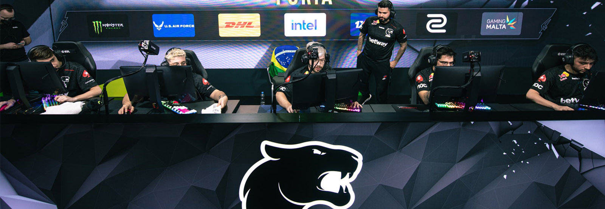
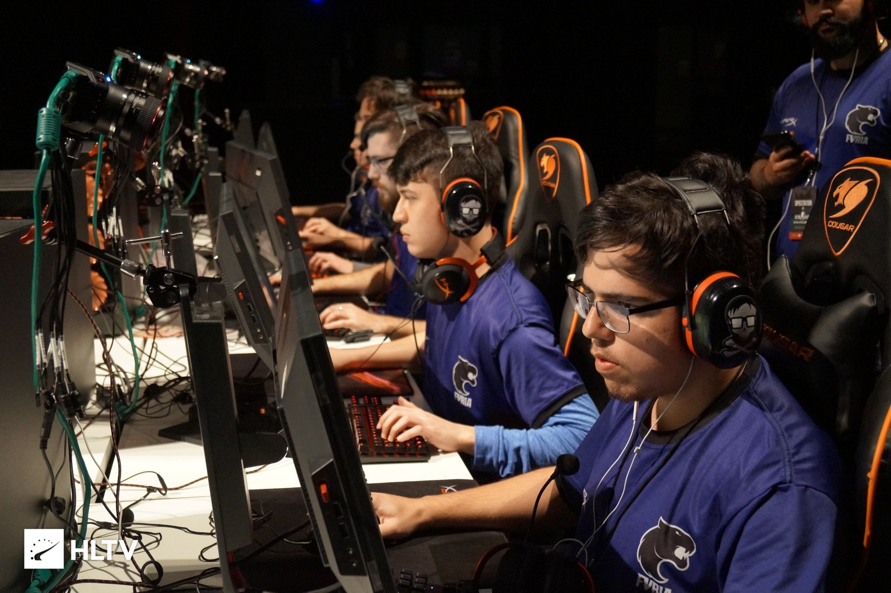

Transform fun into competition and then into positive results, without losing joy and focus. It was with this challenge (and inspiration!) that FURIA emerged in 2017. If at first the undertaking seemed daring, the bar soon increased: FURIA quickly gained not only fans, but also became a movement, the expression of a generation. With each new victory in the arenas and in the games, more followers of the panther emerged.
The panther, by the way, is a separate subject. It was a carefully chosen and constructed symbol, without randomness. It was necessary to show the nature of esports that a predator arrived in the area. Not just any predator that destroys. On the contrary. It was a top-of-the-chain beast that dominates the territory to aggregate. An imposing feline that is all over the planet and that is also 100% Brazilian. And in its most striking phenomenon, in black, it is an icon of resistance, struggle and active voice. It was with the black panther on the chest that thousands of fans identified themselves to the point of taking it with them also in their heart.
In a short time, FURIA became a cultural mobilization of a niche thirsty for representation in society. The sporting results came and captivated. It was time to present fans with something that crossed the border of sporting significance. A positive result that continues to bring people together, fueling our founding dream, while having fun in and out of the games.

